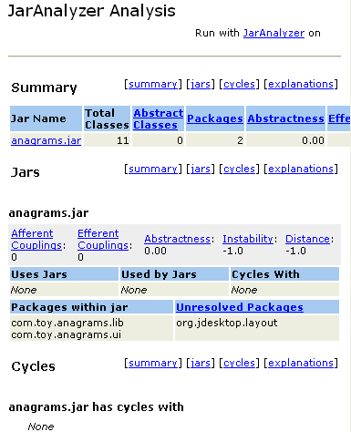

This module calculates the dependencies of jar files.
For calculating the jar dependencies, the project JarAnalyzer is used; see:
Usage
For viewing the jar dependencies do the following steps:
Select either your jars separately, or select a directory containing jar files
Select Build|JarAnalyzer
Your selected browser opens, and displays the jar dependencies
JarAnalyzer Browser Window
A sample JarAnalyzer window:

Options
You can set following options
Define package filters. Packages matching these filters are
not analyzed. You can add and remove package filters.
Duplicate package filters are not allowed.
Reset to the default package filters
java., and javax..
Select an xslt file for rendering the jdepend result
document.
You can set these options via
Tools|Options|Miscellaneous|JarAnalyzer.